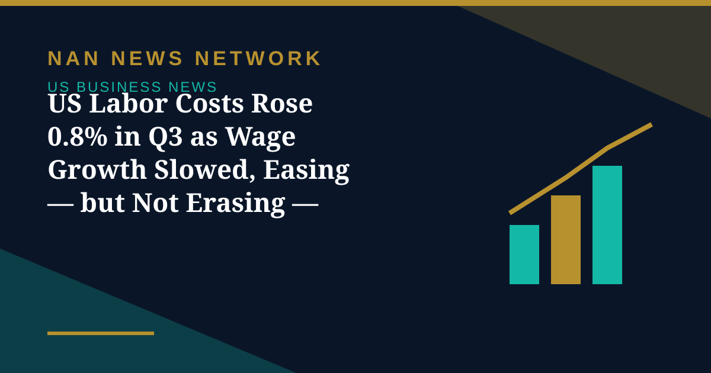

US Labor Costs Rose 0.8% in Q3 as Wage Growth Slowed, Easing — but Not Erasing — Inflation Fears

US labor costs increased moderately in the third quarter, the Labor Department's Bureau of Labor Statistics reported on Friday, October 30, offering the Federal Reserve some relief on wage-driven inflation even as broader price pressures remain elevated.
What the numbers show
The Employment Cost Index, the broadest measure of labor costs, rose 0.8% last quarter after increasing 0.9% in the April-June period, Reuters reported. Labor costs advanced 3.4% in the 12 months through September, unchanged from the year through June. Wages and salaries, which account for the bulk of labor costs, climbed 0.7% last quarter after rising 0.9% in the second quarter, and increased 3.1% over the year, down from 3.2%.
Private-sector wages rose 0.8% in the quarter and 3.1% over the year, while public-sector wages climbed 0.6% and 3.2% respectively. The ECI is closely watched by policymakers because it adjusts for shifts in job mix and quality, giving a cleaner read on underlying pay pressure than average hourly earnings.
Why it matters for the Fed
“Labor-cost inflation continues to move in the right direction,” Priscilla Thiagamoorthy, a senior economist at BMO Capital Markets, told Reuters, adding that while consumer inflation remains elevated, the Fed will take some comfort that the labor market is no longer a significant source of price pressures.
The relief is partial. Wages adjusted for inflation dropped 0.6% in the 12 months through September, after declining 0.3% in the year through June — meaning pay is still lagging prices for workers. And with September PCE inflation at 3.6% year on year and core PCE at 3.1%, markets still price about a 75% chance of a December rate hike, according to CME data cited in Friday previews. The ECI was the last major data point of October ahead of the Fed's December 8-9 meeting.
Sources: Reuters, BLS Employment Cost Index, October 30, 2026
More on US Business News
- Stocks Fall Thursday as Alphabet's Worst Day Ever Drags the Nasdaq Down 1.4%
- Fed Holds Rates at 3.75%–4% in 10–2 Vote as Warsh Says Politics Played No Role
- US Economy Grew 3.4% in Q3, Fastest in a Year, Beating Forecasts
- Wall Street Rallies for Second Day as AI Stocks Lead Ahead of Fed Decision
- Fed Decision Day: Markets Price a Hold as Warsh Faces First Big Test
- Anthropic IPO Filing Lifts Stocks as Wall Street Rallies
- Broadcom's $63 Billion Financing Powers Anthropic Technology Deal
- Wall Street Heads Into Fed Week as Oil Near $117 and Stocks Slip
- Trend Hedge Funds Suffer Worst Week Since 2024 as AI Stocks Slide, Goldman Says
- Meta Lifts 2026 AI Spending Toward $145 Billion and Adds a Nonvoting Stock Class
- OpenAI Nears a $30 Billion Round at a $1.25 Trillion Valuation, Reports Say
- Rivian Buys UK Startup Third Dimension to Build Its Robotaxi Simulator